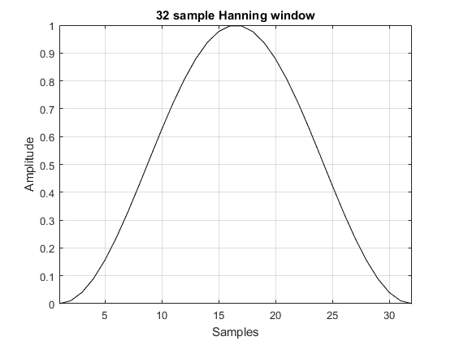
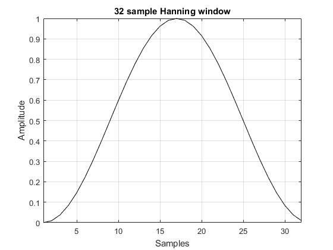
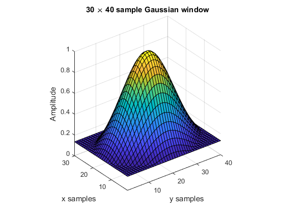

getWin
Return a frequency domain windowing function.
Syntax
win = getWin(N, type) win = getWin(N, type, ...) [win, cg] = getWin(N, type) [win, cg] = getWin(N, type, ...)
Description
getWin returns a 1D, 2D, or 3D frequency domain window of the specified type of the given dimensions. By default, higher dimensional windows are created using the outer product. The windows can alternatively be created using rotation by setting the optional input 'Rotation' to true. The coherent gain of the window can also be returned. Several examples are given below.
getWin(32, 'Hanning', 'Plot', true);
getWin(32, 'Hanning', 'Plot', true, 'Symmetric', false);
getWin([32, 32], 'Gaussian', 'Plot', true);

getWin([30, 40], 'Gaussian', 'Plot', true, 'Rotation', true);
Inputs
N |
number of samples, use
|
type |
window type. Supported values are
|
Optional Inputs
Optional 'string', value pairs that may be used to modify the default computational settings.
| Input | Valid Settings | Default | Description |
|---|---|---|---|
'Plot' |
(Boolean scalar) | false |
Boolean controlling whether the window is displayed. |
'Param' |
(numeric scalar) | 0.16 ('Blackman')0.5 ('Gaussian')3 ('Kaiser')0.5 ('Tukey') |
Control parameter for the Blackman, Gaussian, Kaiser, and Tukey windows. |
'Rotation' |
(Boolean scalar) | false |
Boolean controlling whether 2D and 3D windows are created via rotation or the outer product. Windows created via rotation will have edge values outside the window radius set to zero. |
'Symmetric' |
(Boolean) | true |
Boolean controlling whether the window is symmetrical. If set to false, a window of length N + 1 is created and the first N points are returned. For 2D and 3D windows, 'Symmetric' can be defined as a vector defining the symmetry in each matrix dimension. |
'Square' |
(Boolean scalar) | false |
Boolean controlling whether the window is forced to be square. If set to true and Nx and Nz are not equal, the window is created using the smaller variable, and then padded with zeros. |
Outputs
win |
window |
cg |
coherent gain of the window |